Grounding
0. Enhancing Visual Grounding for GUI Agents via Self-Evolutionary Reinforcement Learning
Grounding
给出三种 Grounding 的解决方案:
- 预先通过 MLLM 筛选数据
- 设计连续的奖励函数, 并通过 GRPO 强化对 bounding box 的感知
- 通过观察 LLM attention 层的数值, 把 attention 层映射到原图上, 来把失败的损失值忽略掉
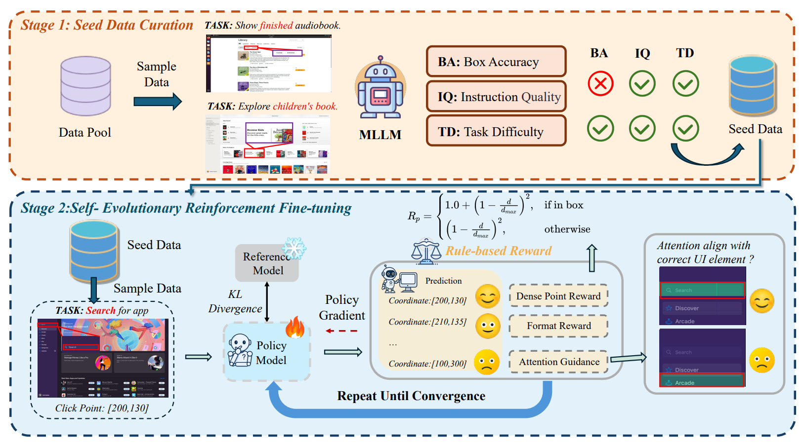
1. data curation
分为 Instruction quality, Bounding box accuracy, Task difficulty 来评判数据质量
2. GRPO
使用如下奖励函数表示 Grounding 的准确度:
3. attention
将原本的注意力层的第 \(i,j\) 个权重记为 \(attn[i,j]\)
那么使用如下 binary 函数来判定损失是否有效:
其中的两个 \(P\):
\(P_{global}\) 表示 bounding box 内的注意力权重平均是否高于全局平均, 如果是, 则有效地注意到了 bounding box 内的内容
\(P_{peak}\) 表示 bounding box 内是否有某一权重大于阈值 \(\tau\), 说明注意到峰值
最后使用过滤函数 \(f\) 进行 GRPO:
Memory
1. A-Mem: Agentic Memory for LLM Agents
Memory
使用类似 RAG 的方法, 把历史互动 \(c_i\) 用大模型生成一些相关的总结, 并把这些文字通过 encoder 生成一个向量 \(e_i\)
计算 cosine similarity 判断哪个记忆与现在相关, 把这些记忆与现在记忆生成一个 link
之后对于 link 到的记忆进行更新
在 LLM Agents 行动时查询 Memory 来更好地理解任务
对于 GUI Agent, 既可以在一次任务过程中的每个决策时调用 A-MEM 的更新记忆 / 获取记忆功能; 同时在不同的任务之间也能长期记忆, 回忆起相似任务的行动细节
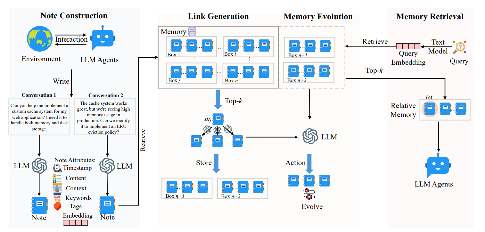
1. Node Construction
一条记忆表示为
其中 \(c_i\) 是原始互动内容
\(L_i\) 是与其他语义相似的记忆的链接
2. Link Generation
语义 cosine similarity topk 相似的记为 \(\mathcal{M}_{near}^n\)
3. Memory Evolution
对于 \(\mathcal{M}_{near}^n\) 中的每个 \(m_j^{* }\), 让 LLM 决定是否对其进行 update neighbor 或者 strengthen (更新 neighbor 的内容, 或者加入新的 link)
4. Memory Retrieval
选择 cosine similarity topk 的记忆给 LLM Agents
2. Chain-of-Memory: Enhancing GUI Agents for Cross-Application Navigation
当前记忆方式：历史行为（保留的信息过少）；历史屏幕截图（存在大量冗余信息） 大模型记忆上下文的范围有限，可能会丢失重要信息 提出的新记忆模型：Chain-of-Memory (CoM) 包括 Short-Term Memory (STM)【存储当前任务相关的信息】 和 Long-Term Memory (LTM)【存储未来可能会用到的信息】
CoM 流水线： 1. Information perception 2. STM Update 3. LTM Storage 4. Action Decision 短期记忆：帮助理解当前任务状态、辅助当前决策
长期记忆：辅助跨应用、跨任务的信息共享
工作流：
根据 Chain of Memory 制作了 GUI Odyssey-CoM 这一数据集
3. Test-time Reinforcement Learning for GUI Grounding via Region Consistency
当前 grounding 主要依赖于大规模标注数据集的监督微调 (supervised fine-tuning with large-scale annotated datasets)和强化学习，在像素级标注的数据集的成本和可用性方面存在问题 从大模型的 Test-time reinforcement learning 得到启发，从而提出了 GUI-RC (Region Consistency) 一种 test-scaling 方法，将多次预测结果汇总，重叠出现的区域具有更高的置信度 基于 GUI-RC 提出了 GUI-RCPO (Region Consistency Policy Optimization) 根据每个预测和多样本共识的匹配程度计算 reward 并在推理时更新模型参数，从而实现在无标签 GUI 数据上优化提升模型性能
形式化表达： - GUI grounding
- GUI-RC 包含三个步骤 利用位置连续性获得更准确的定位
○ Multi-Sample Generation
○ Spatial Voting Mechanism
○ Consensus Extraction
- GUI-RCPO
通过区域一致性奖励更新模型参数，从而使模型收敛到以公式区域为中心的稳定分布
实验结果：
creenSpot-v2 测试，使用 GUI-RC 获得约3%的性能提升，使用 GUI-RCPO 获得约5%的性能提升
Task decomposition
1. TDAG: AMulti-Agent Framework based on Dynamic Task Decomposition and Agent Generation
- 首先提出了传统任务分割和执行策略存在的两个问题：错误向下传递(error propagation)和自适应能力受限(limited adaptability)
○ error propagation：任务执行过程中，其中一个子任务出错，会导致随后的子任务都出错
○ limited adaptability：任务的分割和执行策略都是手动配置的，面对真实情况时不够灵活
- 为了解决上述缺陷，提出了基于 TDAG ( Task Decomposition and Agent Generation ) 的框架
○ Task Decomposition
首先将任务分为 n 个子任务，由分配的 Agent 依次完成每个子任务，每个子任务完成后，都要根据其结果进行判断接下来的子任务是否需要更新（借助这一特性来避免错误的传递）
○ Agent Generation
对于每个子任务，都需要分配一个子 Agent 来完成改任务。子 Agent 的分配过程并非提前设定，而是通过 prompt 的方式由大模型自主完成，由此提升架构的灵活性和自适应能力。同时为了提高子 Agent 的性能，提出了 Tool Document Generation 和 Incremental Skill Library 这两个结构。其中 Tool Document Generation 为 Agent 提供经过处理后更加有效的文档；Incremental Skill Library 保存了 Agent 过去执行积累的经验，用以提高类似情况下的处理速度和准确率
§ Tool Document Generation
§ Incremental Skill Library
○ 架构的整体处理步骤
Mobile-Agent-v3: Foundamental Agents for GUI Automation task分配部分 维护两个子目标集，一个存储待完成的子目标 SS，一个存储已完成的子目标 CS 任务初始状态时创立，随后根据上一时间步的集合内容和执行结果对这两个集合进行维护 若返回结果为成功，则将上一时间步的SS作为新的CS，并重新调整SS 若返回结果为失败，则重排、调整或加入新的子目标到SS，再次执行
UFO2: The Desktop AgentOS 其中负责任务分配和生命期管理的HostAgent
着重点在任务的分配和 lifecycle 管理，并未过多介绍 task decompose 部分，个人认为和 TDAG 的行为相似
2. COLA: A SCALABLE MULTI-AGENT FRAMEWORK FOR WINDOWS UI TASK AUTOMATION
Task decomposition, (Memory)
类似 MoE, 先把用户要求输入给 Planner 产生粗粒度的子任务, 之后 Task Scheduler 把每个子任务分配给最优的 Decision Agent
对于每个 Decision Agent 循环进行细粒度地拆分并进行原子化操作, 让 Reviewer 根据环境评判任务完成度, 直到整个子任务完成才停止循环
同时记忆模块与 A-MEM 类似, 只不过区分长短期记忆
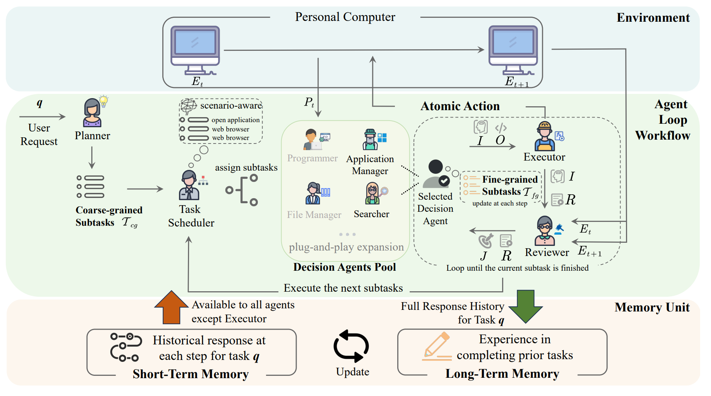
1. Planner
\(PL\) 为 Planner, 通过用户询问 \(q\), 长期记忆前 \(n\) 相关与短期记忆前 \(m\) 最近使用地记忆作为 prompt, 来产生 subtask
2. Task scheduler
对于每个 Agent 给一个描述, 组成 \(DA_{desc}\), 之后结合上一步, 输出每个 Agent \(role_i\) 和对应的子任务
3. Decision Agent Pool
\(P_t\) 是通过 visual backbone 识别环境 \(E_t\) 得到 (对 PC 环境进行 OCR), \(J\) 为 Reviewer 对 Agent 的行为做出的判断
\(O\) 是输出的原子化操作, \(I\) 是对应的意图
之后每一步都更新 \(\mathcal T_{fg}\), 直到所有 \(\mathcal T_{fg}\) 都完成, 这个 Agent 的子任务完成, task scheduler 分配进行下一个子任务
3. PC-Agent: A Hierarchical Multi-Agent Collaboration Framework for Complex Task Automation on PC
Task decomposition, (Grounding)
使用 Active Perception Module 来增强 Grounding 等与环境互动的部分
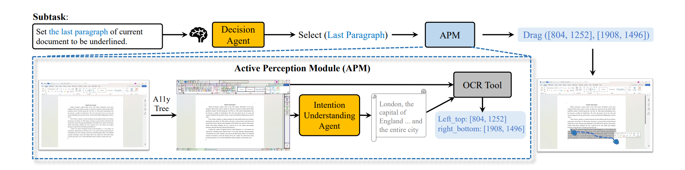
同时将任务拆分成三层: 最上层先将指令拆分, 中间层由 Progress Agent 管理子任务的进度, 最底层由使用 APM 增强的 MLLM Agent 完成任务, 并由另一个 MLLM Agent 进行评估
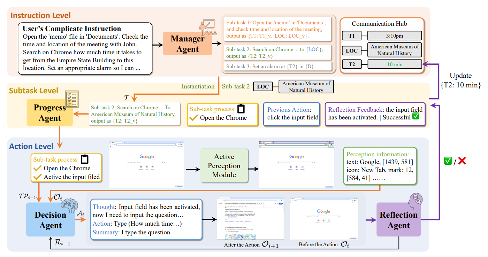
1. Active Perception Module (APM for Grounding)
-
Interactive element perception
使用 pywinauto API 来获取元素坐标与描述
-
Text perception
使用 MLLM-driven 的意图理解 Agent 和 OCR 来确定文本的范围
2. Hierarchical Multi Agent
1. Instrcuction level
使用一个 Manager Agent 将 instruction 分解成 subtasks
同时管理子任务之间的关系
一共四种, 完全独立, 与前面子任务有关, 给后面子任务提供信息, 以及两者都有
2. Subtask level
根据 decision agent 和 reflection agent 总结子任务的进度
3. Action level
decision agent 根据当前任务进度, 以及要求来行动
reflection agent 根据 decision agent 的行为意图以及结果判断是否成功
4. ASSISTGUI: Task-Oriented PC Graphical User Interface Automation
Task Decomposition
与 PC-Agent 类似
先用一个 Planner 进行基于 query 的任务拆分 (可以接受一个 video)
再使用一个 GUI Parser 把 PC element 解析出来
最后由 Actor 决定行动, 并由 Critic 进行评估反馈给 Actor
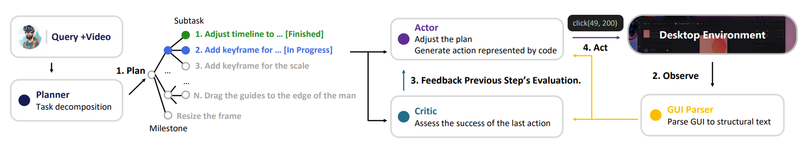
总结
上面三种方法都是先使用 Planner 将用户需求分解成粗粒度的子任务, 之后分配给多个 expert 来执行 (可由统一的 agent 分配并管理); 最后 expert 分成 actor 和 critic, 一个 agent 负责根据回报与当前状态产生行动, 另一个 agent 对于行动与环境变化产生回报
5. Advancing Agentic Systems: Dynamic Task Decomposition, Tool Integration and Evaluation using Novel Metrics and Dataset
Task Decomposition
任务不在分割成一条链, 而是用有向无环图表示, 这样允许 task 并行处理, 同时可以使用 Graph-enhanced LLM 来当 Agent
其他部分与上述大框架基本一致
-
主要的问题:
-
使用 DAG 比链式的子任务结构似乎只有并行运行有提升, 对于具体的任务分割没帮助
6. OWL: Optimized Workforce Learning for General Multi-Agent Assistance in Real-World Task Automation
Dynamic Task Decomposition
同样先进行 Task Planning, 交给 Coordinator 进行任务分工, 每个 Worker Nodes 中的 Agent 根据独立上下文完成子任务
同时任务结果返回给 Task Channel, Coordinator 从中获取任务结果并总结发给 Planner
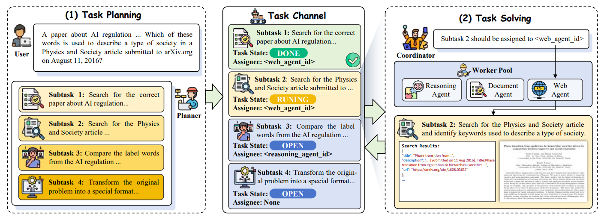
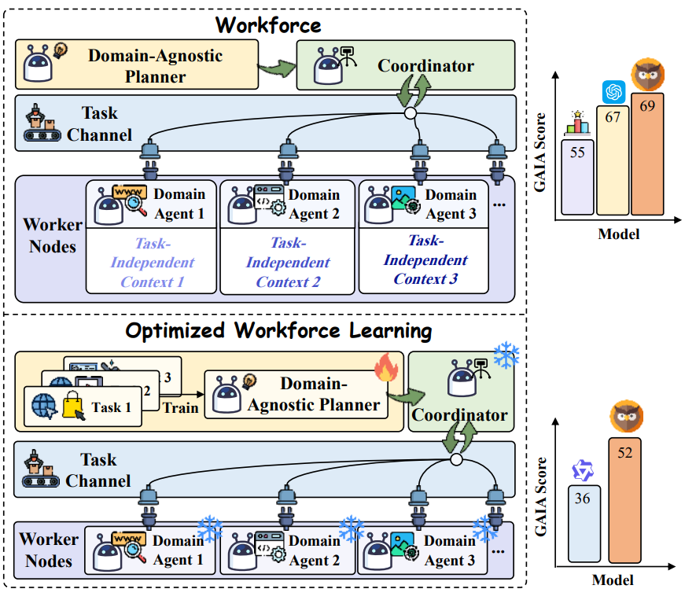
1. Replanning Mechanism
如果子任务全部成功, Planner 总结并结束总任务; 如果子任务失败, Planner 重新规划 subtasks
2. Optimized Workforce Learning (OWL)
同时对于 Planner, 可以进一步通过训练加强表现
先使用 GPT-4o-mini 作为底座, 应用 Workforce 进行整体运行 trajectory 的记录, 通过不同数据集的不同指标筛选高质量 trajectory, 进行 SFT
再使用 SFT 后的 LLM 生成 \(n\) 个不同的轨迹, 标记一条偏好的轨迹, 使用 DPO 学习这个偏好
7.ADAPT: As-Needed Decomposition and Planning with Language Models
Dynamic Task Decomposition
与其他静态方法对比, ADAPT 可以动态调整 plan; 同时 plan 之间不是简单的顺序完成, 而是允许条件判断
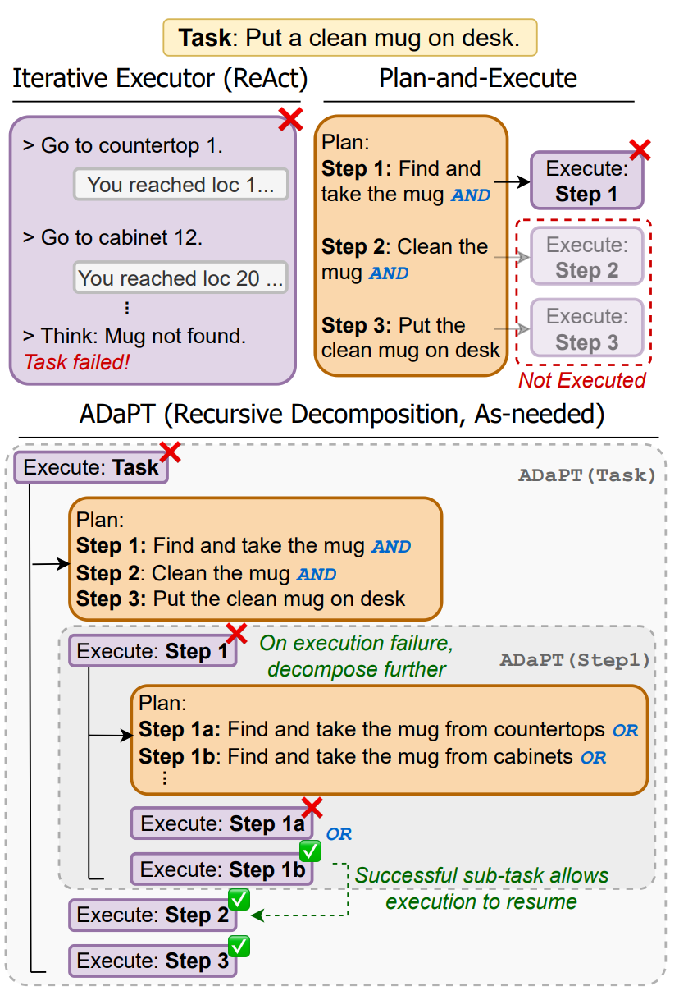
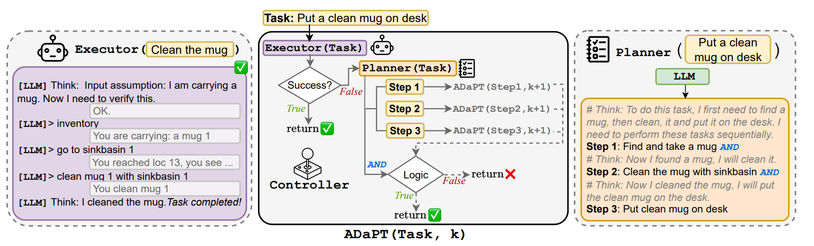
1. Planner
使用 LLM 作为 Planner, 生成粗粒度的子任务以及任务之间的逻辑运算符, 如子任务之间的关系是 AND 还是 OR
2. ADaPT
把 Planner 规划出的子任务交给 Executor 执行, 如果失败就进一步细分, 直到任务完成或达到最大深度
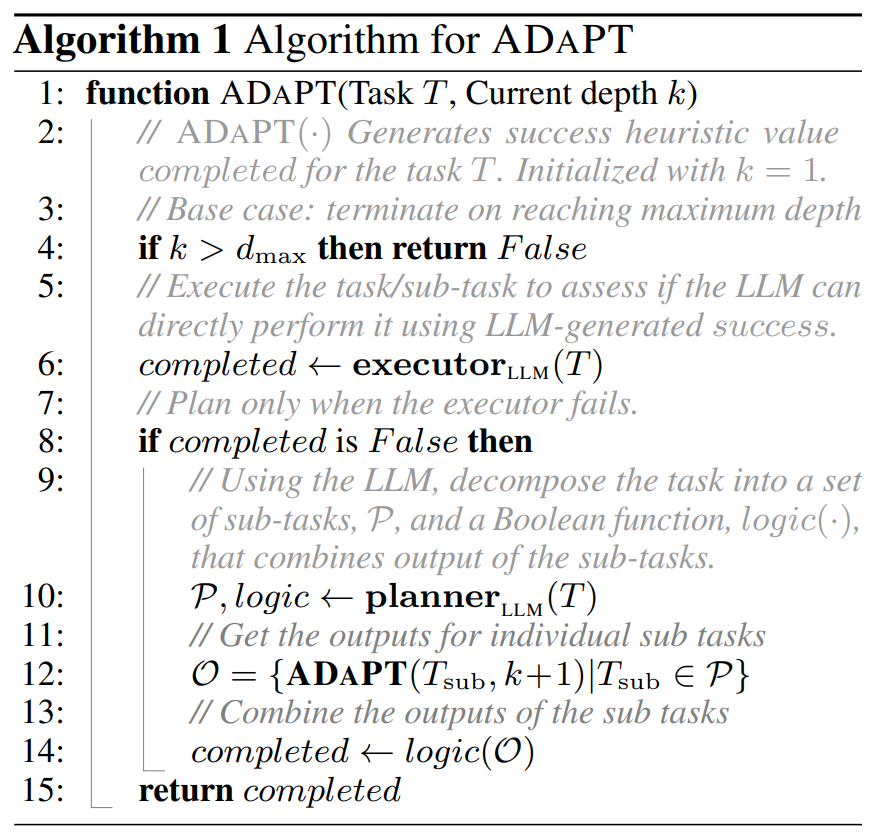
Others
8. Building a Stable Planner: An Extended Finite State Machine Based Planning Module for Mobile GUI Agent
Planning, MultiApp
这篇讲的是多应用的场景下, 可以先对每个应用手动写出有限状态机, 之后对每个 app 分解出对应的有限状态机 \(\epsilon_j\) 和目标行为 \(A_j\), 之后用 BFS 找出每个 \(\epsilon_j\) 的最短路径解
之后用 LLM 把路径改写成自然语言的计划, 用 MLLM 执行计划
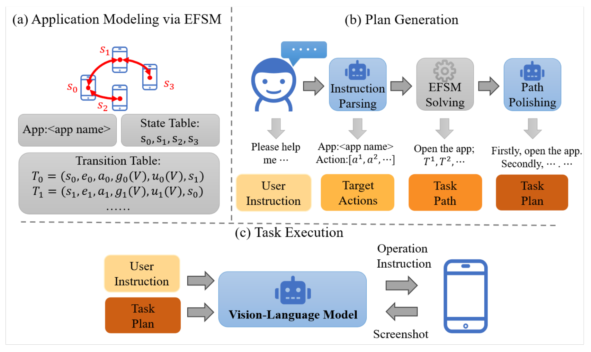
-
主要的问题:
-
第一步 Application Modeling vis EFSM 是人工的, 是否可以换成 LLM 自动探索
-
对于复杂应用, 如包含搜索的应用, 有限状态机是否会过于复杂
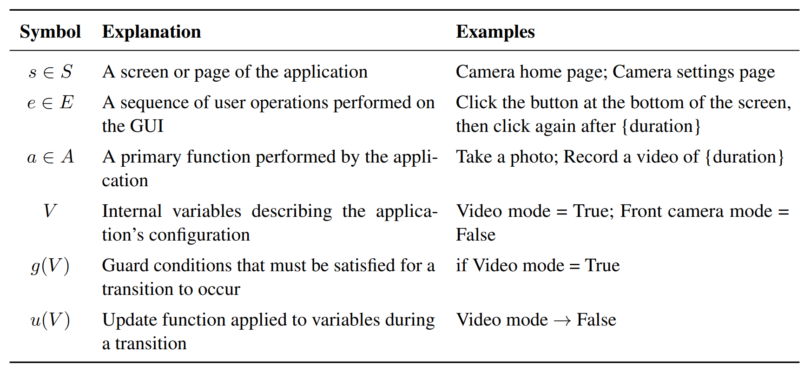
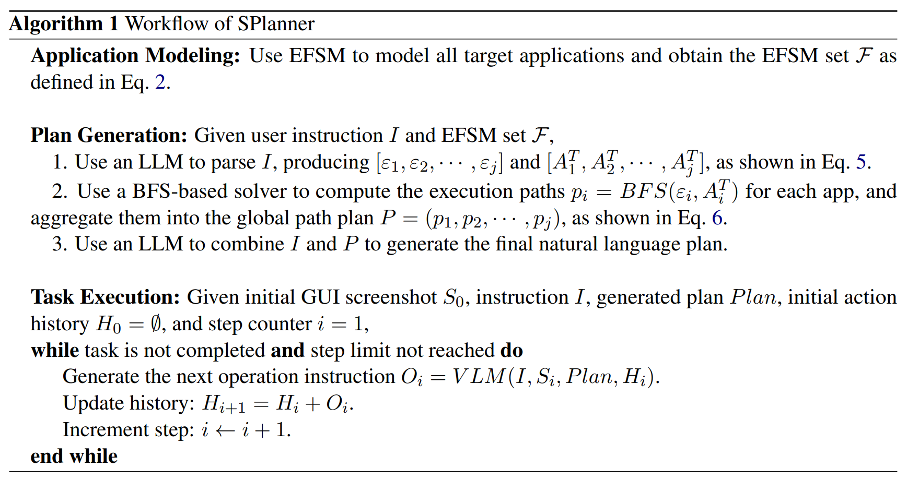